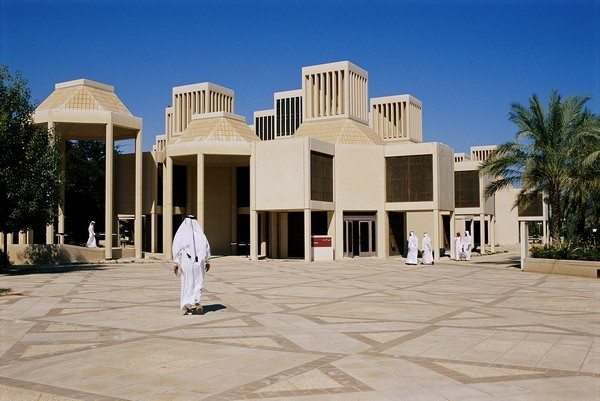

Qatar University Fiction Website
Facts and Figures

Fig.1 QU Campus
Since its inception in 1973, Qatar University has become the country's national and major institution of higher education.
Did you know that delivers 4 highly-popular high school initiatives -- Life is Engineering , Gasna , Computing Contest ,and Al Bairaq?
Other interesting Facts
- For the first time, Qatar University(QU) has been featured in the Times Higher Education World University Ranking
in the 601-800 group.
- QU has also scored the highest for International Outlook among all the other universities this year.
- This year, the Ranking had 70 countries in it out of which 29 were first timers. This is the first time
that countries like Qatar , Indonesia , Malaysia , Ghana , Nigeria , Bangladesh , Latvia , Oman , and Ukraine
have been featured in it
- The countries were ranked partly based on the publication and citation data from the world's largest abstract and citation
database of peer reviewed literature called the Elsevier's Scopus.
- The Editor of the Rankings, Phil Baty , has commented as ,"Qatar is the one of several countries to have made its debut in the
year's rankings. The achievement is in part due to expanding the ranking to include 801 universities and 70 countries
- Among Middle Eastern countries , Iran leads with 8 universities in the top 800 . Egypt and Saudi Arabia with 3 universities.
, Jordan and UAE with 2 universities and Qatar, Lebanon, Morocco , and Oman with 1 university each in the top 800 list
- In the African region, southAfrica leads with 6 universities in the top 800 .
Create Registration Form
Check Timetable for the semester
Visit Qatar University Main Page